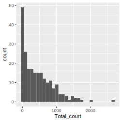
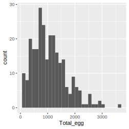
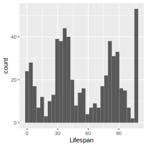
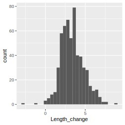
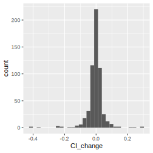
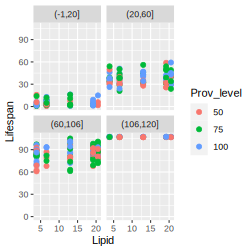
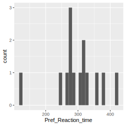
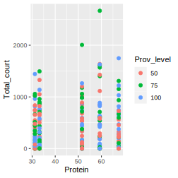

Chapter 9 Solutions: What are the effects of dietary restriction?
Q1 Types of response variable for each individual characteristic
- Mortality—binary, dead or alive.
- Time spent courting—cannot be negative, will likely be numeric, may be distrete (e.g. 10 mins or 20 minutes) or continuous, ratio type.
- Female reproduction egg production—count type data, not negative, discrete (integers), ratio type.
- Change in fish length—could be negative or positive, ratio type.
- Body condition index (a measure of the weight of an individual relative to its length)-only positive, likely continuous, ratio type.
Q2. How many fish and how many of each sex?
- 300 female and 300 female.
Q3. What treatments were there?
- Five diets varying in protein and lipid content (Table 2 in paper).
- Three provisioning levels (100%, 75% or 50% of ad libitum intake).
- A total of 15 dietary treatments.
Q4. What are the important features of the data?
- Number of variables: not too many as a designed experiment with clear question.
- Number of observations: number of fish (they were “individually housed”, and assigned treatment on an individual level).
- Variables describing manipulations: yes, two.
- Correlation among variables: low (factorial experiment, though some imbalance likely)
- Independence of observations: there may be multiple observations per fish (repeated measures). Fish may share mothers, fathers, and other pre-experiment conditions.
Q5. Which datafiles do you need?
## Parsed with column specification:
## cols(
## .default = col_double(),
## FID = col_character(),
## Sex = col_character(),
## Size = col_character()
## )## See spec(...) for full column specifications.## Parsed with column specification:
## cols(
## FID = col_character(),
## Family = col_character(),
## Shelf_stack = col_character(),
## Diet = col_double(),
## Level = col_double(),
## Size = col_character(),
## Trial = col_double(),
## Days_breeding = col_double(),
## P_day = col_double(),
## P2_day = col_double(),
## L_day = col_double(),
## L2_day = col_double(),
## Mean_react = col_double(),
## Total_ZZ = col_double(),
## Total_lead = col_double(),
## Total_court = col_double()
## )## Parsed with column specification:
## cols(
## FID = col_character(),
## Family = col_character(),
## Stack_shelf = col_character(),
## Diet = col_double(),
## Level = col_double(),
## Size = col_character(),
## P_day = col_double(),
## P2_day = col_double(),
## L_day = col_double(),
## L2_day = col_double(),
## Days_breeding = col_double(),
## Number_clutches = col_double(),
## mean_number = col_double(),
## Total_egg = col_double()
## )## Parsed with column specification:
## cols(
## FID = col_character(),
## Shelf_stack = col_character(),
## Sex = col_character(),
## Diet = col_double(),
## Level = col_double(),
## Size = col_character(),
## Batch = col_double(),
## P_day = col_double(),
## P2_day = col_double(),
## L_day = col_double(),
## L2_day = col_double(),
## ZP = col_double(),
## ZP2 = col_double(),
## ZL = col_double(),
## ZL2 = col_double(),
## Ln = col_double(),
## Wt = col_double(),
## CI = col_double()
## )Q6. Which variables tell us about the experimental design (including the explantory variables) and when observations were made?
- FID – Unique ID for each individual.
- Diet – Diet Treatment (Diet P:L: 1 = 10.2:1, 2 = 4.6:1, 3 = 2.5:1, 4 = 8.5:1, 5 = 1.6:1).
- Sex – Sex of individual (M = male, F = female).
- Size – Size classification of individual (L = large, S = Small).
- Level – Provisioning level, values represent percentages of monthly ad libitum monitoring.
- Week_F – Experimental week.
- Batch – Weighing batch.
Q7. Which variables in which dataset can be used to calculate each of the five response variables?
- Mortality:
status, 0 = alive, 1 = Dead, inMoatt_et_al_Data_S1.csv - Time spent courting:
Total_court– Total time courting across all trials, inMoatt_et_al_Data_S5.csv. - Female reproduction egg production:
Total_egg– Total number of eggs produced, inMoatt_et_al_Data_S6.csv. - Change in fish length: Ln – Length of individual in mm, in
Moatt_et_al_Data_S15.csv. - Body condition index: CI – Condition Index for each individual,
Moatt_et_al_Data_S15.csv.
Q8. How many rows are in each dataset?
Moatt_et_al_Data_S1.csv: 33’049 rows, 24 variablesMoatt_et_al_Data_S5.csv: 228, 16Moatt_et_al_Data_S6.csv: 269, 14Moatt_et_al_Data_S15.csv:6000, 18
Q9. Which of the datasets are tidy and which are not?
All four datasets appear tidy, at the moment.
Q10. Rename the following variables to be more intepretable, and only keep necessary variables:
courtship <- courtship %>%
select(Fish_ID=FID, Family, Shelf_stack, Diet_comp=Diet,
Prov_level=Level, Fish_size=Size, Trial, Total_court)
eggs <- eggs %>%
select(Fish_ID=FID, Family, Shelf_stack=Stack_shelf, Diet_comp=Diet,
Prov_level=Level, Fish_size=Size, Total_egg)
length_weight_condition <- length_weight_condition %>%
select(Fish_ID=FID, Shelf_stack, Diet_comp=Diet, Sex=Sex,
Batch,
Prov_level=Level, Fish_size=Size, Length=Ln, Weigth=Wt, Cond_index=CI)
mortality <- mortality %>%
select(Fish_ID=FID, Diet_comp=Diet, Sex,
Prov_level=Level, Fish_size=Size, Week=Week_F, Status)Q11. Replace codes with informative words, for at least the Diet variable (or what you renamed it to), the Fish_size variable, the Sex variable, and the Status variable.
courtship <- courtship %>%
mutate(Diet_comp = case_when(Diet_comp == 1 ~ "10.2:1",
Diet_comp == 2 ~ "4.6:1",
Diet_comp == 3 ~ "2.5:1",
Diet_comp == 4 ~ "8.5:1",
Diet_comp == 5 ~ "1.6:1"),
Fish_size = case_when(Fish_size == "S" ~ "Small",
Fish_size == "L" ~ "Large"))
eggs <- eggs %>%
mutate(Diet_comp = case_when(Diet_comp == 1 ~ "10.2:1",
Diet_comp == 2 ~ "4.6:1",
Diet_comp == 3 ~ "2.5:1",
Diet_comp == 4 ~ "8.5:1",
Diet_comp == 5 ~ "1.6:1"),
Fish_size = case_when(Fish_size == "S" ~ "Small",
Fish_size == "L" ~ "Large"))
length_weight_condition <- length_weight_condition %>%
mutate(Diet_comp = case_when(Diet_comp == 1 ~ "10.2:1",
Diet_comp == 2 ~ "4.6:1",
Diet_comp == 3 ~ "2.5:1",
Diet_comp == 4 ~ "8.5:1",
Diet_comp == 5 ~ "1.6:1"),
Fish_size = case_when(Fish_size == "S" ~ "Small",
Fish_size == "L" ~ "Large"),
Sex = case_when(Sex == "M" ~ "Male",
Sex == "F" ~ "Female"))
mortality <- mortality %>%
mutate(Diet_comp = case_when(Diet_comp == 1 ~ "10.2:1",
Diet_comp == 2 ~ "4.6:1",
Diet_comp == 3 ~ "2.5:1",
Diet_comp == 4 ~ "8.5:1",
Diet_comp == 5 ~ "1.6:1"),
Fish_size = case_when(Fish_size == "S" ~ "Small",
Fish_size == "L" ~ "Large"),
Sex = case_when(Sex == "M" ~ "Male",
Sex == "F" ~ "Female"),
Status = case_when(Status == 0 ~ "alive",
Status == 1 ~ "dead"))Q12. which of the four datasets contains an odd duplicate entry? And which fish is involved? What should we do next?
## [1] 0## [1] 0## [1] 0## [1] 1## # A tibble: 1 x 7
## Fish_ID Diet_comp Sex Prov_level Fish_size Week Status
## <chr> <chr> <chr> <dbl> <chr> <dbl> <chr>
## 1 LR504 1.6:1 Male 100 Small 2 alive## # A tibble: 2 x 7
## Fish_ID Diet_comp Sex Prov_level Fish_size Week Status
## <chr> <chr> <chr> <dbl> <chr> <dbl> <chr>
## 1 LR504 1.6:1 Male 100 Small 2 dead
## 2 LR504 1.6:1 Male 100 Small 2 alive## # A tibble: 4 x 7
## Fish_ID Diet_comp Sex Prov_level Fish_size Week Status
## <chr> <chr> <chr> <dbl> <chr> <dbl> <chr>
## 1 LR504 1.6:1 Male 100 Small 1 alive
## 2 LR504 1.6:1 Male 100 Small 2 dead
## 3 LR504 1.6:1 Male 100 Small 2 alive
## 4 LR504 1.6:1 Male 100 Small 4 deadIn the mortality dataset fish LR504 has two records for week 2.
## here we check if this is the only fish with fewer records than weeks it was observed in
check <- mortality %>%
group_by(Fish_ID) %>%
summarise(check = length(unique(Week))==max(Week))
check %>%
filter(!check)## # A tibble: 1 x 2
## Fish_ID check
## <chr> <lgl>
## 1 LR504 FALSE9.0.1 NAs, variable entries, e.g. levels of characters, ranges of numerics, numbers of “things”*
Q13. How many missing values in the courtship dataset (remember to reduce the variables to those mentioned above)?
## # A tibble: 1 x 8
## Fish_ID Family Shelf_stack Diet_comp Prov_level Fish_size Trial Total_court
## <chr> <chr> <chr> <chr> <dbl> <chr> <dbl> <dbl>
## 1 LR021 F117 A3 8.5:1 50 Large 1 NAQ14. Which variable(s) contain missing values?
See answer for previous question.
Q15. Which fish have missing values?
See answer for previous question.
Q16. How many different entries are there in the Shelf_stack variable?
## [1] "A1" "A2" "A3" "B1" "B2" "B3" "C1" "C2" "C3" "D1" "D2" "D3" "E1" "E2" "E3"
## [16] "F1" "F2" "F3" "G1" "G2" "G3" "H1" "H2" "H3" "I1" "I2" "I3" "J1" "J2" "J3"
## [31] "K1" "K2" "K3" "L1" "L3" "L2"Q17. What are the mean and median of the Total_court variable?
courtship %>%
summarise(mean_total_court = mean(Total_court, na.rm=T),
media_total_court = median(Total_court, na.rm=T))## # A tibble: 1 x 2
## mean_total_court media_total_court
## <dbl> <dbl>
## 1 453. 337Q18 What are the units of the Total_court variable? (This is a trick/sneaky question.)
Q19. How many fish are in each of the datasets?
## [1] 228## [1] 269| Name | eggs |
| Number of rows | 269 |
| Number of columns | 7 |
| _______________________ | |
| Column type frequency: | |
| character | 5 |
| numeric | 2 |
| ________________________ | |
| Group variables | None |
Variable type: character
| skim_variable | n_missing | complete_rate | min | max | empty | n_unique | whitespace |
|---|---|---|---|---|---|---|---|
| Fish_ID | 0 | 1 | 5 | 5 | 0 | 269 | 0 |
| Family | 0 | 1 | 4 | 4 | 0 | 20 | 0 |
| Shelf_stack | 0 | 1 | 2 | 2 | 0 | 36 | 0 |
| Diet_comp | 0 | 1 | 5 | 6 | 0 | 5 | 0 |
| Fish_size | 0 | 1 | 5 | 5 | 0 | 2 | 0 |
Variable type: numeric
| skim_variable | n_missing | complete_rate | mean | sd | p0 | p25 | p50 | p75 | p100 | hist |
|---|---|---|---|---|---|---|---|---|---|---|
| Prov_level | 0 | 1 | 75.09 | 20.32 | 50 | 50 | 75 | 100 | 100 | ▇▁▇▁▇ |
| Total_egg | 1 | 1 | 1069.56 | 631.56 | 66 | 609 | 1001 | 1402 | 3608 | ▇▇▃▁▁ |
## # A tibble: 1 x 7
## Fish_ID Family Shelf_stack Diet_comp Prov_level Fish_size Total_egg
## <chr> <chr> <chr> <chr> <dbl> <chr> <dbl>
## 1 LR212 F121 D3 2.5:1 75 Small NA269 fish IDs
## [1] 600600 fish IDs
## [1] 5949.1 Independence
Q20. Which of the datasets contains only one observation per fish, and which contain repeated (i.e. multiple) observations of each fish?
## [1] 0Zero shows that no fish have more than one observation.
## [1] 0Zero shows that no fish have more than one observation.
## [1] 600All 600 fish have more than one observation… there is non-independence that we’ll have to deal with.
## [1] 586586 of the 594 fish in the mortality dataset have more than one observation… there is non-independence that we’ll have to deal with.
9.2 Balance in experimental design
Q21: From the description of the experiment in the paper, how many fish are there per treatment combination?
courtship %>%
group_by(Diet_comp, Prov_level) %>%
summarise(count=n(),
n_unique=length(unique(Fish_ID)))## # A tibble: 15 x 4
## Diet_comp Prov_level count n_unique
## <chr> <dbl> <int> <int>
## 1 1.6:1 50 17 17
## 2 1.6:1 75 19 19
## 3 1.6:1 100 15 15
## 4 10.2:1 50 12 12
## 5 10.2:1 75 12 12
## # … with 10 more rows## # A tibble: 15 x 4
## Diet_comp Prov_level `n()` n_unique
## <chr> <dbl> <int> <int>
## 1 1.6:1 50 14 14
## 2 1.6:1 75 17 17
## 3 1.6:1 100 17 17
## 4 10.2:1 50 18 18
## 5 10.2:1 75 18 18
## # … with 10 more rowslength_weight_condition %>%
group_by(Diet_comp, Prov_level) %>%
summarise(n(),
n_unique=length(unique(Fish_ID)))## # A tibble: 15 x 4
## Diet_comp Prov_level `n()` n_unique
## <chr> <dbl> <int> <int>
## 1 1.6:1 50 400 40
## 2 1.6:1 75 400 40
## 3 1.6:1 100 400 40
## 4 10.2:1 50 400 40
## 5 10.2:1 75 400 40
## # … with 10 more rows## # A tibble: 15 x 4
## Diet_comp Prov_level `n()` n_unique
## <chr> <dbl> <int> <int>
## 1 1.6:1 50 2239 39
## 2 1.6:1 75 2519 40
## 3 1.6:1 100 2258 40
## 4 10.2:1 50 1951 40
## 5 10.2:1 75 1668 39
## # … with 10 more rows9.3 Calculate response variable(s) (if required)
The courtship and eggs datasets already contain the response variable.
Q22. Calculate the response variable for the change in fish length and change in body condition from the length_weight_condition dataset, and the time of death (or no death [censored]) from the mortality dataset.
### Time of death
temp_mortality2 <- mortality %>%
filter(Status=="alive") %>%
group_by(Fish_ID, Diet_comp, Prov_level, Sex) %>%
summarise(Lifespan=max(Week))
last_obs <- mortality %>%
group_by(Fish_ID, Diet_comp, Prov_level) %>%
summarise(Last_sample=max(Week))
mortality2 <- full_join(temp_mortality2, last_obs) %>%
mutate(Censored=ifelse(Lifespan==Last_sample, T, F),
Lifespan=ifelse(is.na(Lifespan), 0, Lifespan),
Censored=ifelse(Lifespan==0, FALSE, Censored)) %>%
ungroup() %>%
select(-Last_sample)## Joining, by = c("Fish_ID", "Diet_comp", "Prov_level")Above, we set the eight fish that were already dead at week 1 as having a lifespan of zero.
### Change in length
change1 <- length_weight_condition %>%
group_by(Fish_ID, Diet_comp, Prov_level) %>%
do(m1 = lm(Length ~ Batch, data=.)) %>%
tidy(m1) %>%
filter(term=="Batch") %>%
select(Fish_ID, Diet_comp, Prov_level, Length_change=estimate)Note that tidy silently drops NA coefficients.
### Change in condition
change2 <- length_weight_condition %>%
group_by(Fish_ID, Diet_comp, Prov_level) %>%
do(m1 = lm(Cond_index ~ Batch, data=.)) %>%
tidy(m1) %>%
filter(term=="Batch") %>%
select(Fish_ID, Diet_comp, Prov_level, CI_change=estimate)Note that tidy silently drops NA coefficients.
Q23. Merge all the datasets.
dd <- full_join(courtship, eggs) %>%
full_join(mortality2) %>%
full_join(change1) %>%
full_join(change2)## Joining, by = c("Fish_ID", "Family", "Shelf_stack", "Diet_comp", "Prov_level",
## "Fish_size")Joining, by = c("Fish_ID", "Diet_comp", "Prov_level")Joining, by =
## c("Fish_ID", "Diet_comp", "Prov_level")Joining, by = c("Fish_ID", "Diet_comp",
## "Prov_level")Q24. Bring in and merge the diet composition dataset (diet_comp_treatments.csv).
## Parsed with column specification:
## cols(
## Protein = col_double(),
## Lipid = col_double(),
## Diet_comp = col_character()
## )## Joining, by = "Diet_comp"Q25. Reorder the Diet_comp variable, and make the Prov_level a factor with appropriate order.
dd <- mutate(dd,
Diet_comp = fct_relevel(Diet_comp,
"1.6:1",
"2.5:1",
"4.6:1",
"8.5:1",
"10.2:1"),
Prov_level = fct_relevel(as.character(Prov_level),
"50",
"75",
"100"))Q26. There are some irregularities in this merged dataset. Can you spot them?
## # A tibble: 2 x 16
## Fish_ID Family Shelf_stack Diet_comp Prov_level Fish_size Trial Total_court
## <chr> <chr> <chr> <fct> <fct> <chr> <dbl> <dbl>
## 1 LR294 F122 F1 10.2:1 75 Large 1 278
## 2 LR364 F128 H1 2.5:1 100 Large 1 0
## # … with 8 more variables: Total_egg <dbl>, Sex <chr>, Lifespan <dbl>,
## # Censored <lgl>, Length_change <dbl>, CI_change <dbl>, Protein <dbl>,
## # Lipid <dbl>## # A tibble: 4 x 16
## Fish_ID Family Shelf_stack Diet_comp Prov_level Fish_size Trial Total_court
## <chr> <chr> <chr> <fct> <fct> <chr> <dbl> <dbl>
## 1 LR042 F128 A2 2.5:1 75 Small 4 64
## 2 LR581 F137 L1 8.5:1 50 Small 6 823
## 3 LR286 F128 F3 2.5:1 75 Large NA NA
## 4 LR467 F115 J2 8.5:1 50 Large NA NA
## # … with 8 more variables: Total_egg <dbl>, Sex <chr>, Lifespan <dbl>,
## # Censored <lgl>, Length_change <dbl>, CI_change <dbl>, Protein <dbl>,
## # Lipid <dbl>Q27. Now use the versions of the datafiles that have the word “udpated” in their name.
rm(list=ls())
mortality <- read_csv("data/Moatt_et_al_Data_S1_updated.csv")
courtship <- read_csv("data/Moatt_et_al_Data_S5_updated.csv")
eggs <- read_csv("data/Moatt_et_al_Data_S6_updated.csv")
length_weight_condition <- read_csv("data/Moatt_et_al_Data_S15_updated.csv")
courtship <- courtship %>%
select(Fish_ID=FID, Family, Shelf_stack, Diet_comp=Diet,
Prov_level=Level, Fish_size=Size, Trial, Total_court)
eggs <- eggs %>%
select(Fish_ID=FID, Family, Shelf_stack=Stack_shelf, Diet_comp=Diet,
Prov_level=Level, Fish_size=Size, Total_egg)
length_weight_condition <- length_weight_condition %>%
select(Fish_ID=FID, Shelf_stack, Diet_comp=Diet, Sex=Sex,
Batch,
Prov_level=Level, Fish_size=Size, Length=Ln, Weigth=Wt, Cond_index=CI)
mortality <- mortality %>%
select(Fish_ID=FID, Diet_comp=Diet, Sex,
Prov_level=Level, Fish_size=Size, Week=Week_F, Status)
courtship <- courtship %>%
mutate(Diet_comp = case_when(Diet_comp == 1 ~ "10.2:1",
Diet_comp == 2 ~ "4.6:1",
Diet_comp == 3 ~ "2.5:1",
Diet_comp == 4 ~ "8.5:1",
Diet_comp == 5 ~ "1.6:1"),
Fish_size = case_when(Fish_size == "S" ~ "Small",
Fish_size == "L" ~ "Large"))
eggs <- eggs %>%
mutate(Diet_comp = case_when(Diet_comp == 1 ~ "10.2:1",
Diet_comp == 2 ~ "4.6:1",
Diet_comp == 3 ~ "2.5:1",
Diet_comp == 4 ~ "8.5:1",
Diet_comp == 5 ~ "1.6:1"),
Fish_size = case_when(Fish_size == "S" ~ "Small",
Fish_size == "L" ~ "Large"))
length_weight_condition <- length_weight_condition %>%
mutate(Diet_comp = case_when(Diet_comp == 1 ~ "10.2:1",
Diet_comp == 2 ~ "4.6:1",
Diet_comp == 3 ~ "2.5:1",
Diet_comp == 4 ~ "8.5:1",
Diet_comp == 5 ~ "1.6:1"),
Fish_size = case_when(Fish_size == "S" ~ "Small",
Fish_size == "L" ~ "Large"),
Sex = case_when(Sex == "M" ~ "Male",
Sex == "F" ~ "Female"))
mortality <- mortality %>%
mutate(Diet_comp = case_when(Diet_comp == 1 ~ "10.2:1",
Diet_comp == 2 ~ "4.6:1",
Diet_comp == 3 ~ "2.5:1",
Diet_comp == 4 ~ "8.5:1",
Diet_comp == 5 ~ "1.6:1"),
Fish_size = case_when(Fish_size == "S" ~ "Small",
Fish_size == "L" ~ "Large"),
Sex = case_when(Sex == "M" ~ "Male",
Sex == "F" ~ "Female"),
Status = case_when(Status == 0 ~ "alive",
Status == 1 ~ "dead"))
## Check for the odd duplicate
check <- mortality %>%
group_by(Fish_ID) %>%
summarise(check = length(unique(Week))==max(Week))
check %>%
filter(!check)## # A tibble: 0 x 2
## # … with 2 variables: Fish_ID <chr>, check <lgl>## no rows... excellent
### Time of death
temp_mortality2 <- mortality %>%
filter(Status=="alive") %>%
group_by(Fish_ID, Diet_comp, Prov_level, Sex) %>%
summarise(Lifespan=max(Week))
last_obs <- mortality %>%
group_by(Fish_ID, Diet_comp, Prov_level) %>%
summarise(Last_sample=max(Week))
mortality2 <- full_join(temp_mortality2, last_obs) %>%
mutate(Censored=ifelse(Lifespan==Last_sample, T, F),
Lifespan=ifelse(is.na(Lifespan), 0, Lifespan),
Censored=ifelse(Lifespan==0, FALSE, Censored)) %>%
ungroup() %>%
select(-Last_sample)
### Change in length
change1 <- length_weight_condition %>%
group_by(Fish_ID, Diet_comp, Prov_level) %>%
do(m1 = lm(Length ~ Batch, data=.)) %>%
tidy(m1) %>%
filter(term=="Batch") %>%
select(Fish_ID, Diet_comp, Prov_level, Length_change=estimate)
### Change in condition
change2 <- length_weight_condition %>%
group_by(Fish_ID, Diet_comp, Prov_level) %>%
do(m1 = lm(Cond_index ~ Batch, data=.)) %>%
tidy(m1) %>%
filter(term=="Batch") %>%
select(Fish_ID, Diet_comp, Prov_level, CI_change=estimate)
dd <- full_join(courtship, eggs) %>%
full_join(mortality2) %>%
full_join(change1) %>%
full_join(change2)
diet_comp <- read_csv("data/diet_comp_treatments.csv")
dd <- full_join(dd, diet_comp)
dd <- mutate(dd,
Diet_comp = fct_relevel(Diet_comp,
"1.6:1",
"2.5:1",
"4.6:1",
"8.5:1",
"10.2:1"),
Prov_level = fct_relevel(as.character(Prov_level),
"50",
"75",
"100"))
## Check for fish doing what they shouldn't be..
dd %>%
filter(Sex == "Female", !is.na(Total_court))## # A tibble: 0 x 16
## # … with 16 variables: Fish_ID <chr>, Family <chr>, Shelf_stack <chr>,
## # Diet_comp <fct>, Prov_level <fct>, Fish_size <chr>, Trial <dbl>,
## # Total_court <dbl>, Total_egg <dbl>, Sex <chr>, Lifespan <dbl>,
## # Censored <lgl>, Length_change <dbl>, CI_change <dbl>, Protein <dbl>,
## # Lipid <dbl>## # A tibble: 0 x 16
## # … with 16 variables: Fish_ID <chr>, Family <chr>, Shelf_stack <chr>,
## # Diet_comp <fct>, Prov_level <fct>, Fish_size <chr>, Trial <dbl>,
## # Total_court <dbl>, Total_egg <dbl>, Sex <chr>, Lifespan <dbl>,
## # Censored <lgl>, Length_change <dbl>, CI_change <dbl>, Protein <dbl>,
## # Lipid <dbl>Excellent… there are no odd duplicates, no male fish laying eggs, and no female fish engaging in courtship.
Q28. Write a few sentences about the distribution of each of the five response variables.
## `stat_bin()` using `bins = 30`. Pick better value with `binwidth`.## Warning: Removed 369 rows containing non-finite values (stat_bin).
## `stat_bin()` using `bins = 30`. Pick better value with `binwidth`.## Warning: Removed 328 rows containing non-finite values (stat_bin).
## `stat_bin()` using `bins = 30`. Pick better value with `binwidth`.
## `stat_bin()` using `bins = 30`. Pick better value with `binwidth`.## Warning: Removed 26 rows containing non-finite values (stat_bin).
## `stat_bin()` using `bins = 30`. Pick better value with `binwidth`.## Warning: Removed 26 rows containing non-finite values (stat_bin).
9.4 Inspect relationships
Q29. Confirm in a graph the stated result: “Male mortality risk was lowest on intermediate lipid intakes”.
dd <- dd %>%
mutate(period=cut(Lifespan, breaks=c(-1, 20, 60, 106, 120)))
dd %>%
filter(Sex=="Male") %>%
ggplot() +
geom_point(aes(x=Lipid, y=Lifespan, col=Prov_level),
position = position_jitterdodge(jitter.width=0.05)) +
facet_wrap(~period, nrow=3)dd %>% filter(Sex=="Male") %>%
ggplot(aes(x=Lipid, y=Lifespan, col=Prov_level)) +
geom_point(position = position_jitterdodge(jitter.width=0.05)) +
facet_wrap(~period, nrow=3)
Q30. Confirm in a graph the stated result: “Female risk was generally reduced by low protein intakes.”
dd %>%
filter(Sex=="Female") %>%
ggplot() +
geom_point(aes(x=Protein, y=Lifespan, col=Prov_level),
position = position_jitterdodge(jitter.width=0.05)) +
facet_wrap(~period, nrow=3)
Q31. Confirm in a graph the stated result: “The effect of macronutrient intake on reproduction was similar between the sexes, with high protein intakes maximizing reproduction.”
dd %>%
filter(Sex=="Male") %>%
ggplot() +
geom_point(aes(x=Protein, y=Total_court, col=Prov_level),
position = position_jitterdodge(jitter.width=0.05))## Warning: Removed 65 rows containing missing values (geom_point).
dd %>%
filter(Sex=="Female") %>%
ggplot() +
geom_point(aes(x=Protein, y=Total_egg, col=Prov_level), position = position_jitterdodge(jitter.width=0.2, dodge.width = 5))## Warning: position_jitterdodge requires non-overlapping x intervals## Warning: Removed 30 rows containing missing values (geom_point).9.5 Below are lists of variables in each of the four used datasets.
9.6 Moatt et al Data S1 – Mortality Data
- FID – Unique ID for each individual.
- Diet – Diet Treatment (Diet P:L: 1 = 10.2:1, 2 = 4.6:1, 3 = 2.5:1, 4 = 8.5:1, 5 = 1.6:1).
- Sex – Sex of individual (M = male, F = female).
- Size – Size classification of individual (L = large, S = Small).
- Level – Provisioning level, values represent percentages of monthly ad libitum monitoring.
- Total_eaten – Total pellet eaten in g from the start of the experiment.
- Eaten_wk – Amount of pellet consumed that week (gweek-1).
- P_tot - Total protein eaten in g from the start of the experiment.
- P2_total – P_tot2 squared (i.e. the total protein eaten squared).
- P_wk – Amount of protein consumed that week (gweek-1).
- P2_wk – P_wk2 squared (i.e. the weekly protein intake squared).
- L_tot - Total lipid eaten in g from the start of the experiment.
- L2_total – L_tot2 squared (i.e. the total lipid eaten squared).
- L_wk – Amount of lipid consumed that week (gweek-1).
- L2_wk – L_wk2 squared (i.e. the weekly lipid intake squared).
- Weight – Weight of fish from last weighing (g).
- Week_F – Experimental week.
- Status – Survival status (0= alive, 1 = Dead).
- T_group – Time period of the experiment (see Fig. S1).
- Initial_weight – Initial weight of individual at the start of the experiment.
- ZP – P_wk z transformed (mean of 0 and standard deviation of 1).
- ZP2 – P2_wk z transformed (mean of 0 and standard deviation of 1).
- ZL – L_wk z transformed (mean of 0 and standard deviation of 1).
- ZL2 – L2_wk z transformed (mean of 0 and standard deviation of 1).
9.7 Moatt et al Data S5 – Courtship Data
- FID – Unique ID for each individual.
- Family – Unique code for family group (i.e. clutch of origin). Each clutch produced from a unique sire and dam.
- Shelf_stack – Unique code for the stack and shelf of fish home tank.
- Diet – Diet Treatment (Diet P:L: 1 = 10.2:1, 2 = 4.6:1, 3 = 2.5:1, 4 = 8.5:1, 5 = 1.6:1).
- Level – Provisioning level, values represent percentages of monthly ad libitum monitoring.
- Size – Size classification of individual (L = large, S = Small).
- Trial – Number of trials that individual experienced.
- Days_breeding – Length of breeding season for that individual.
- P_day – Average protein intake per day during the breeding season (gday-1).
- P2_day – P_day2 squared (i.e. daily protein intake squared).
- L_day - Average lipid intake per day during the breeding season (gday-1).
- L2_day – L_day2 squared (i.e. daily lipid intake squared).
- Mean_react – Mean reaction time across all trials for that individual.
- Total_ZZ – Total number of zigzags across all trials.
- Total_leads – Total number of leads across all trials.
- Total_court – Total time courting across all trials.
9.8 Moatt et al Data S6 – Eggs Data
- FID – Unique ID for each individual.
- Family – Unique code for family group (i.e. clutch of origin). Each clutch produced from a unique sire and dam.
- Shelf_stack – Unique code for the stack and shelf of fish home tank.
- Diet – Diet Treatment (Diet P:L: 1 = 10.2:1, 2 = 4.6:1, 3 = 2.5:1, 4 = 8.5:1, 5 = 1.6:1).
- Level – Provisioning level, values represent percentages of monthly ad libitum monitoring.
- Size – Size classification of individual (L = large, S = Small).
- P_day – Average protein intake per day during the breeding season (gday-1).
- P2_day – P_day2 squared (i.e. daily protein intake squared).
- L_day - Average lipid intake per day during the breeding season (gday-1).
- L2_day – L_day2 squared (i.e. daily lipid intake squared).
- Days_breeding – Length of breeding season for that individual.
- Number_clutches – Number of clutches produced by that individual.
- Mean_number – Mean number of eggs per clutch.
- Total_egg – Total number of eggs produced.
9.9 Moatt et al Data S15 – Length, Weight and Condition Index Data
- FID – Unique ID for each individual.
- StackShelf – Unique code for the stack and shelf of fish home tank.
- Sex – Sex of individual (M = male, F = female).
- Diet – Diet Treatment (Diet P:L: 1 = 10.2:1, 2 = 4.6:1, 3 = 2.5:1, 4 = 8.5:1, 5 = 1.6:1).
- Level – Provisioning level, values represent percentages of monthly ad libitum monitoring.
- Size – Size classification of individual (L = large, S = Small).
- Batch – Weighing batch. NB Batch 1 is prior to diet treatments therefore has no corresponding values for protein and lipid intake.
- P_day – Average protein intake per day during the breeding season (gday-1).
- P2_day – P_day2 squared (i.e. daily protein intake squared).
- L_day - Average lipid intake per day during the breeding season (gday-1).
- L2_day – L_day2 squared (i.e. daily lipid intake squared).
- ZP – Daily protein intake z transformed (mean of 0 and standard deviation of 1), calculated for each sex independently.
- ZP2 – Daily protein intake squared, z transformed (mean of 0 and standard deviation of 1), calculated for each sex independently.
- ZL – Daily lipid intake z transformed (mean of 0 and standard deviation of 1), calculated for each sex independently.
- ZL2 – Daily lipid intake squared, z transformed (mean of 0 and standard deviation of 1), calculated for each sex independently.
- Ln – Length of individual in mm.
- Wt – Weight of individual in g.
- CI – Condition Index for each individual.